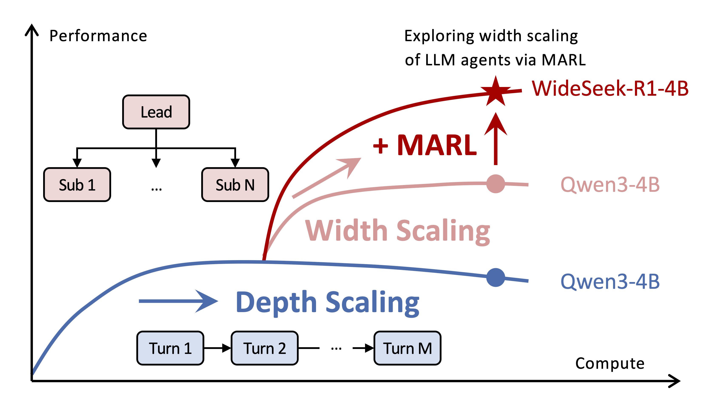
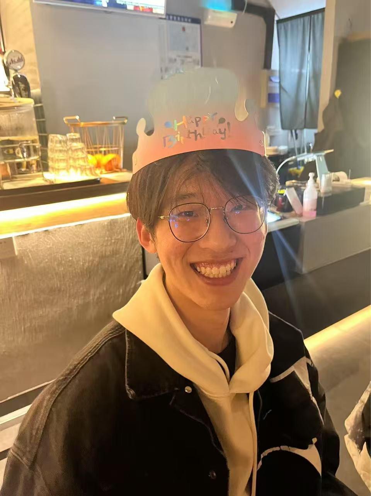
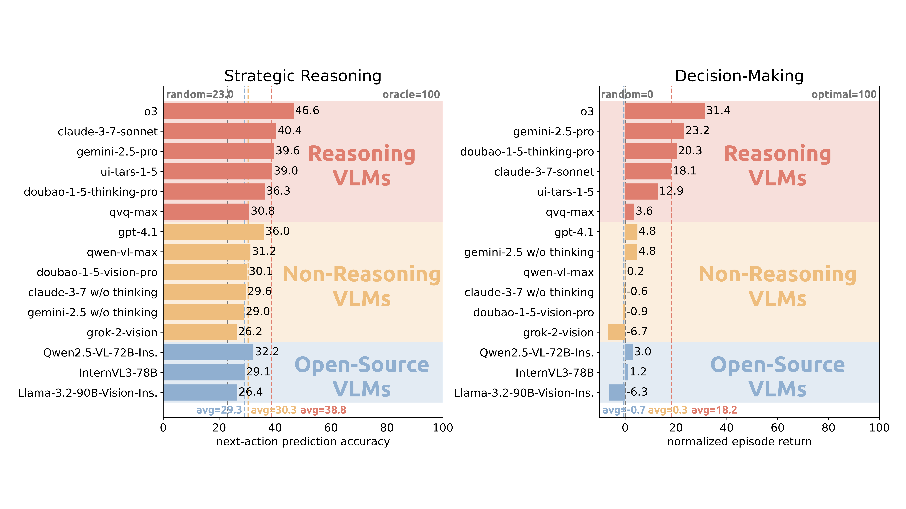

Preprint2026
About me
Ph.D. Student Tsinghua University
I am a Ph.D. student in the Department of Electronic Engineering at Tsinghua University, advised by Prof. Yu Wang and Prof. Chao Yu. My research interests include reinforcement learning, multi-agent systems, and embodied intelligence.

Ph.D. Department of Electronic Engineering
Bachelor’s Degree School of the Gifted Young
* Equal contribution

